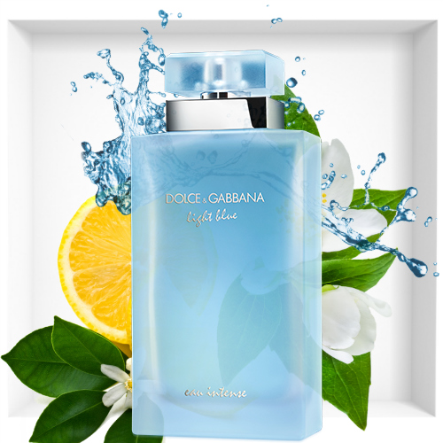
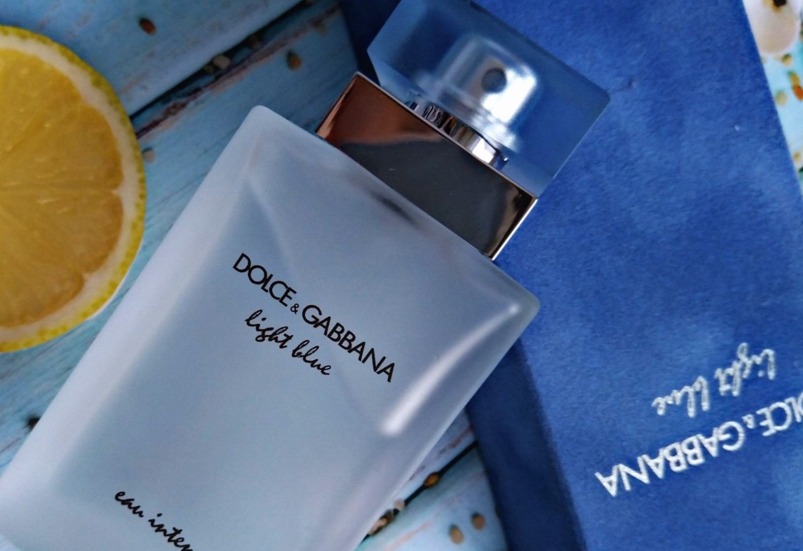

Энергичная, чувственная свежесть: Dolce&Gabbana Light Blue Eau Intense
дополняет культовый аромат Light Blue от Dolce&Gabbana уникальными нотами, подчеркивая
его более глубоким оттенком средиземноморской синевы.
Описание
Женский аромат Dolce&Gabbana Light Blue Eau Intense олицетворяет всю силу
средиземноморской, искренней и непринужденной женственности. В этом аромате свежесть цитрусовых в
сочетании с нежным цветочным букетом уступает место теплым и соблазнительным древесным нотам.


Дизайн
Дизайн Dolce&Gabbana Light Blue Eau Intense отражает насыщенность аромата за
счет матированного стекла, в котором вода приобретает выразительный оттенок Light Blue, напоминающий
Средиземное море. Флакон, представленный с утонченными, женственными и элегантными линиями, увенчан
изысканной пробкой глубокого синего оттенка.
НОТЫ
Dolce&Gabbana Light Blue Eau de Parfum Intense: свежая и соблазнительная аура.
Аромат был создан Оливье Креспом в эксклюзивном порядке для Dolce&Gabbana.
ВЕРХНИЕ НОТЫ
Аромат открывается яркими упоительными нотами лимона в сочетании с хрустящей свежестью яблока Гренни Смит.
НОТЫ СЕРДЦА
В сердце парфюмерной воды Light Blue Intense от Dolce&Gabbana распускается
красочный букет из календулы и жасмина в полном цвету.
БАЗОВЫЕ НОТЫ
Изящные ноты благородного мускуса и амбровой древесины сливаются на коже,
обласканной солнцем, раскрывая шлейф, благоухающий чувственностью.
.jpg)